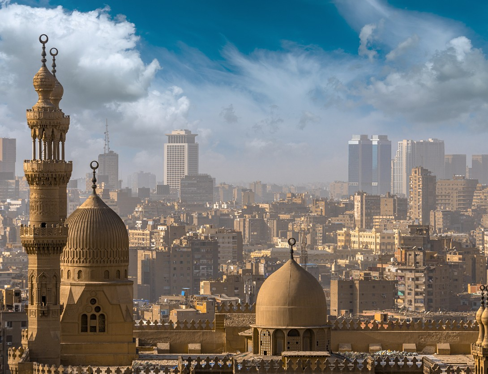
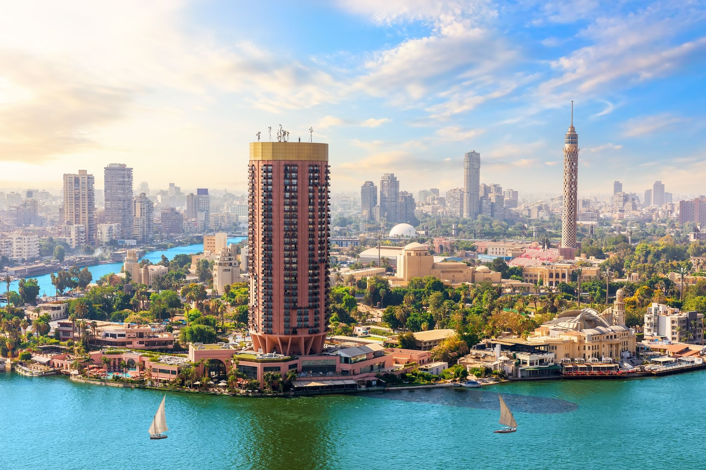

Esplora Il Cairo interattivamente
Esplora Il Cairo interattivamente

Il Cairo, la vibrante capitale dell'Egitto, si erge da secoli come crocevia di culture, religioni e commerci. Fondata nel 969 d.C. dalla dinastia fatimide, la città si sviluppò attorno alla famosa Al-Qahira, "la Vittoriosa", espandendosi rapidamente grazie alla sua posizione strategica lungo le rive fertili del Nilo. Le sue vie, intrise del profumo di spezie e del suono dei mercanti, raccontano una storia lunga millenni, tra palazzi storici, antiche madrase e suq affollati dove il tempo sembra essersi fermato.
Nel corso dei secoli, Il Cairo divenne il centro culturale e spirituale del mondo islamico. Sotto il dominio mamelucco e ottomano, la città fiorì con opere d’arte e architetture straordinarie: tra queste, la possente Cittadella di Saladino, costruita per proteggere la città dagli assedi, e la storica Moschea di Al-Azhar, ancora oggi uno dei principali centri di studi religiosi dell'Islam. Oggi, il Cairo si presenta come una metropoli sconfinata, dove la modernità sfida e si mescola al fascino immutabile della tradizione.
La Modernità tra Storia e Cultura Millenaria

Nel corso dei secoli, Il Cairo si è evoluto fino a diventare una delle città più affascinanti e complesse del mondo arabo. Accanto ai quartieri storici sono sorti distretti moderni come Heliopolis e Nasr City, che raccontano il volto contemporaneo della capitale. Oggi, opere come il Grand Egyptian Museum testimoniano il desiderio del Cairo di onorare il suo passato millenario guardando al futuro.
Camminando per le sue strade si percepisce un’energia unica: il traffico incessante, i mercati affollati, i profumi di spezie e pane appena sfornato si mescolano con la solennità di antichi minareti e moschee secolari. Qui, la modernità non cancella la memoria: ogni angolo racconta storie di sultani, mercanti e viaggiatori.
A pochi chilometri dal centro urbano, il panorama cambia: il profilo maestoso delle Piramidi di Giza si staglia contro l’orizzonte, richiamando secoli di storia e leggenda. Così, Il Cairo continua a vivere sospeso tra passato e presente, offrendo un’esperienza intensa, vibrante e profondamente autentica.